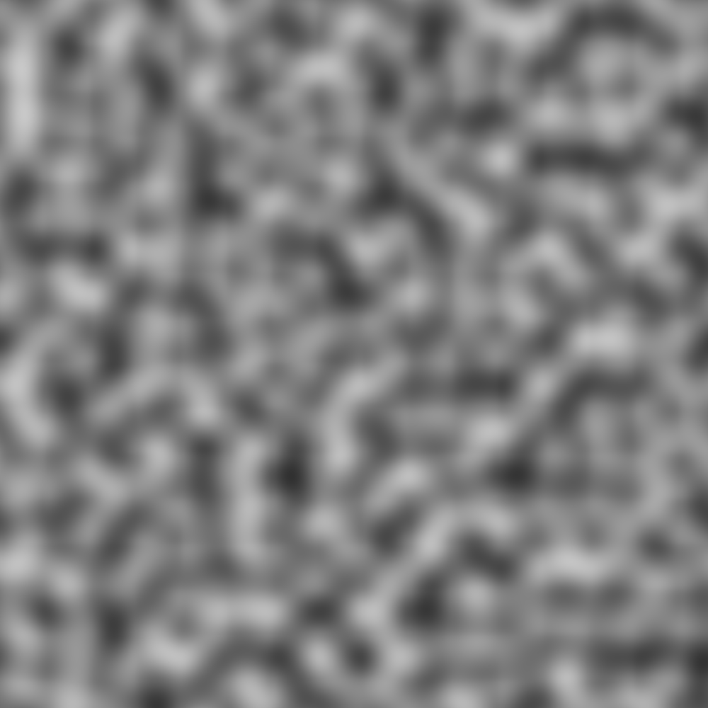

Noise
A presentation in randomness
What is random?
Randomness is the lack of pattern or predictability in events. A random sequence of events, symbols or steps has no order and does not follow an intelligible pattern or combination.
What is random?
Life cannot be calculated. That's the big mistake our civilization made. We never accepted that randomness is not a mistake in the equation -- it is part of the equation.
Jeanette Winterson
What is random?
In the past, I used to rely on the randomness of working with samples, which was a good way because it threw you in a completely different direction. You just thought, 'What if I take this samba drum and combined it with an '80s synth line or something from this record?
Jens Lekman
What is random in a finite state machine?
True Random Numbers (TRN)
Method based on a physical process. As such, must take place outside of the computer
Examples include radioactive decay, the photoelectric effect, cosmic background radiation, atmospheric noise, and more.
These are said to be "true" random numbers
What is random in a finite state machine?
Pseudorandom Numbers (PRN)
An alternative to "true" random numbers
Involves computational algoritms producing apparently random results
Only apparently random as the end result are completely determined by an initial value called a seed or key.
If this value and the algoritm is known, the seemingly random result can be reproduced
How do we create random in code?
 std::rand()
std::srand()
std::rand()
std::srand()
How do we create random in code?
 java.util.Random()
Math.random()
ThreadLocalRandom()
java.util.Random()
Math.random()
ThreadLocalRandom()
How do we create random in code?
 java.util.Random()
Math.random()
ThreadLocalRandom()
java.util.Random()
Math.random()
ThreadLocalRandom()
Applications of random?
- Cryptography
- Cryptocurrency wallets
- Simulations
- Machine learning
- TCP/IP sequence numbers
- Computer graphics
Procedural Generation
Procedural generation is a method of creating data algorithmically as opposed to manually. In computer graphics, it is commonly used to create textures and 3D models.Procedural Generation
Procedural Generation
Let's look at some popular games from 2004
Doom 3 - 7.56 GB
Far Cry - 4 GB
Unreal Tournament 2004 - 5 GB
Half-Life 2 - 6 GB
.kkrieger - 96 KB
..kkrieger
GLSL
- OpenGL Shading Language (GLSL): A high-level shading language based on the syntax of the C programming language.
Vertex Processor: Vertex Shader
uniform mat4 u_modelViewProjMatrix; // Passed in from CPU
attribute vec4 vPosition; // Information from vertex
void main()
{
gl_Position = u_modelViewProjMatrix * vPosition;
}

Fragment Processor: Fragment Shader
void main()
{
gl_FragColor = vec4(1, 1, 1, 1); // RGBA
}
 //
//
Gradient Noise

Gradient Noise
Perlin Noise
Gradient Noise
Simplex Noise
Gradient Noise
Simplex Noise
How do we create noise?
Algoritms